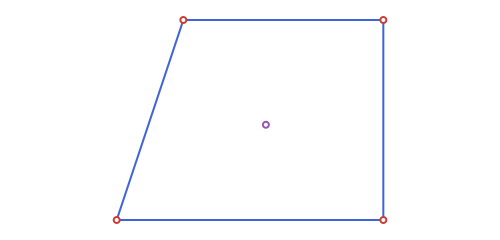
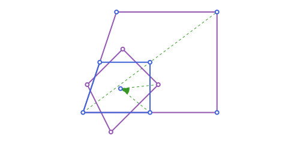
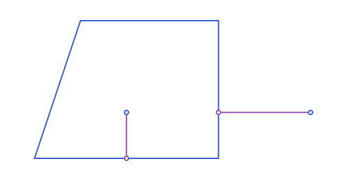
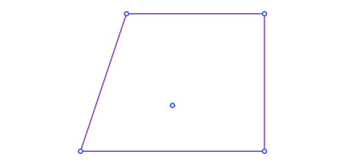
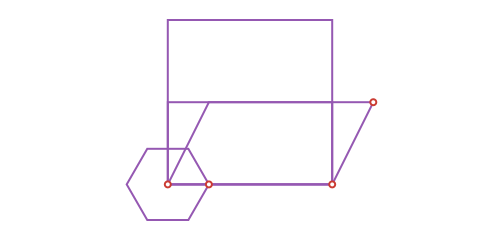
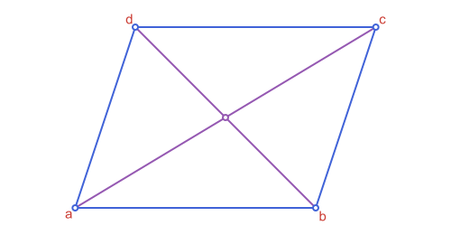

Polygons & Bounding Boxes
APStraightNgon is an ordered list of vertices (no repeated closing point), assumed to describe a simple polygon (edges don't cross themselves). It's one member of the APPolygon family (the same one APTriangle and APQuadrilateral belong to), so area, perimeter, centroid, is_convex and point_in_polygon are all defined once, generically, on APPolygon itself, rather than reimplemented per type. This page also covers a separate, lighter-weight APBoundingBox type for quick axis-aligned containment/overlap tests.
Basic measurements
using Apollonius
pg = APStraightNgon([APPoint(0.0, 0.0), APPoint(4.0, 0.0), APPoint(4.0, 3.0), APPoint(1.0, 3.0)])
vertices(pg)4-element Vector{APPoint{2, Float64}}:
[0.0, 0.0]
[4.0, 0.0]
[4.0, 3.0]
[1.0, 3.0]One vertex per argument works too, instead of wrapping them in a Vector (the same pair of forms APPolyline2 has, see Points, Lines & Rays):
pg == APStraightNgon(APPoint(0.0, 0.0), APPoint(4.0, 0.0), APPoint(4.0, 3.0), APPoint(1.0, 3.0))truearea(pg) # 10.5, shoelace formula
perimeter(pg) # sum of edge lengths
centroid(pg) # area-weighted centroid, not the plain vertex average[2.238095238095238, 1.4285714285714286]
centroid weights by area rather than just averaging the vertices (a polygon with vertices clustered on one side but a large flat area on the other still gets the geometrically correct center of mass). For a (near-)zero-area degenerate polygon, where that weighting breaks down, it falls back to the plain vertex average instead.
rotate, reflection and homothety all work on an APStraightNgon too, transforming every vertex:
rotate(pg, pi / 4, centroid(pg))
homothety(pg, 2.0)APStraightNgon(APPoint{2, Float64}[[0.0, 0.0], [8.0, 0.0], [8.0, 6.0], [2.0, 6.0]])
Distance to a polygon
distance(p, pg) works the same way for every APPolygon (straight or curved). With mode = :region (the default), it's 0.0 for a point inside or on pg, otherwise the distance to the nearest side; with mode = :boundary, it's always the distance to the boundary, even from inside:
distance(APPoint(2.0, 1.0), pg) # 0.0: strictly inside
distance(APPoint(2.0, 1.0), pg; mode=:boundary) # > 0.0: distance to the nearest side instead
distance(APPoint(6.0, 1.0), pg) # outside: both modes agree2.0
Convexity and containment
is_convex(pg) # true
point_in_polygon(APPoint(2.0, 1.0), pg) # true: strictly inside
point_in_polygon(APPoint(5.0, 1.0), pg) # false: strictly outsidefalse
point_in_polygon uses the standard ray-casting (even-odd) rule, and works the same way for every APPolygon: APTriangle, APQuadrilateral, or any curved region from Circles. Its one sharp edge: a point that lies exactly on the boundary can come back as either true or false, depending on which edge and in which direction; this is a well-known property of ray casting itself, not a bug, so don't rely on an exact boundary point going either way.
Convex hull
pts = [APPoint(0.0, 0.0), APPoint(4.0, 0.0), APPoint(4.0, 3.0), APPoint(1.0, 3.0), APPoint(2.0, 1.0)]
hull = convex_hull(pts)
vertices(hull)4-element Vector{APPoint{2, Float64}}:
[0.0, 0.0]
[4.0, 0.0]
[4.0, 3.0]
[1.0, 3.0]
convex_hull is Andrew's monotone chain algorithm (O(n log n), sorts the points then builds the lower and upper chains in one pass each), returning an APStraightNgon. Points strictly inside the hull (like (2, 1) above) are simply dropped; duplicate input points are also removed before the sweep.
Bounding boxes
APBoundingBox is a separate, minimal type (just two points, .min and .max) for when a full polygon is more machinery than you need (a quick overlap test, a viewport, a spatial-indexing key). It has constructors from a vector of points, or directly from most shapes in the package (APSegment, APTriangle, APPolygon, APCircle2, ...):
bb = APBoundingBox(pg) # same as APBoundingBox(vertices(pg))
bb.min, bb.max([0.0, 0.0], [4.0, 3.0])bbox_width(bb), bbox_height(bb) # 4.0, 3.0
bbox_center(bb) # [2.0, 1.5]
bbox_diagonal(bb) # 5.0
bbox_aspect_ratio(bb) # width / height1.3333333333333333
Translating (+/- an APPoint) and scaling (* a real number) an APBoundingBox both return a new, still-valid APBoundingBox: scaling by a negative factor still produces min <= max correctly, by re-sorting the two scaled corners rather than assuming the sign of the factor.
Unlike everything in the APPolygon family, APBoundingBox deliberately sits outside the APObject hierarchy's region branch and has no rotate/reflection methods: an arbitrary rotation or reflection wouldn't generally produce another axis-aligned box, only a rotated rectangle, which isn't what this type represents. Translation and uniform scaling about the origin are the only transforms that always preserve that invariant, so those are what's supported (+/-/* above, rather than rotate/reflection/homothety).
APPoint(1.0, 1.0) in bb # containment, boundary included
bb2 = APBoundingBox(APPoint(2.0, 1.0), APPoint(6.0, 5.0))
bboxes_intersect(bb, bb2) # true: they overlap
bbox_intersection(bb, bb2) # the overlapping region itselfAPBoundingBox([2.0, 1.0] .. [4.0, 3.0])
distance(p, bb) has the same mode = :region/:boundary pair as distance(p, pg::APPolygon) above: 0.0 from inside with the default :region, or always the distance to the box's edge with :boundary:
distance(APPoint(1.0, 1.0), bb) # 0.0: inside bb
distance(APPoint(1.0, 1.0), bb; mode=:boundary) # > 0.0: distance to the nearest edge1.0bboxes_intersect treats touching (sharing just an edge or corner) as intersecting. bbox_intersection returns nothing instead of a degenerate box when they don't overlap at all.
bbox_union is the other direction: the smallest box containing both, always defined (unlike the intersection, a/b don't need to overlap):
bbox_union(bb, bb2)APBoundingBox([0.0, 0.0] .. [6.0, 5.0])
Not everything has a finite box to report. APPoint gets a real but degenerate (zero-size) box at its own location (a point is a position, so it can still grow a union), while a plain number, an APVector (a direction, not a location), and any unbounded curve/region (APLine, APRay, APAngle2, APHalfPlane2, APStrip2) have none at all. APBoundingBox returns the special empty box, APBoundingBox(), for these, the identity element for bbox_union: unioning it with anything just returns the other box unchanged, and isempty tells the two apart:
isempty(APBoundingBox(5.0)), isempty(APBoundingBox(APLine(APPoint(0.0, 0.0), APPoint(1.0, 1.0))))(true, true)bbox_union(APBoundingBox(5.0), bb) == bbtrueThis is what lets @boundingbox/@to_luxor_picture (see Transforming in Bulk: Macros) call APBoundingBox on every value named in a block (construction helpers included) without needing to special-case the ones that were never meant to be drawn or sized.
Boxes from a center and a size
APBoundingBox(center, width, height) builds the box with the given center and size, and inflate(bb, margin) grows a box by margin on every side (or by mx and my on the two directions), or shrinks it when negative. An empty box stays empty:
bx = APBoundingBox(APPoint(1.0, 1.0), 4.0, 2.0)
bx, inflate(bx, 1.0), inflate(bx, 1.0, 0.5)(APBoundingBox([-1.0, 0.0] .. [3.0, 2.0]), APBoundingBox([-2.0, -1.0] .. [4.0, 3.0]), APBoundingBox([-2.0, -0.5] .. [4.0, 2.5]))Offsetting a polygon
offset_polygon(pg, d) is the polygon parallel to pg at distance d: outward for a positive d, inward for a negative one. Each side moves along its normal, and every new vertex is where two neighbouring moved sides meet. A concave polygon, or an inward offset larger than the polygon, can cross itself. To round the corners instead, see round_corners in Circle constructions step by step.
sq_o = APStraightNgon([APPoint(0.0, 0.0), APPoint(4.0, 0.0), APPoint(4.0, 4.0), APPoint(0.0, 4.0)])
area(offset_polygon(sq_o, 1.0)), area(offset_polygon(sq_o, -1.0))(36.0, 4.0)
Random points on a perimeter
rand draws a uniformly random point on a polygon's or a bounding box's own perimeter, never its interior (see Points, Lines & Rays for the general story across every shape in the package): each side is picked with probability proportional to its own length, then a point on that side uniformly, so the result is uniform along the whole boundary, not just uniform-per-side:
p = rand(pg)
point_in_polygon(p, pg) # true: on the boundary, which counts as "in" by default
pb = rand(bb)
pb in bb # same idea for a bounding box's own edgetrue
Named polygon constructors
A handful of constructors build common quadrilaterals and regular polygons directly, so they interoperate with everything above (area, is_convex, APBoundingBox, ...) for free.
| Function | Builds | Returns |
|---|---|---|
parallelogram | the parallelogram through 3 consecutive vertices a, b, c (the 4th, d, is completed automatically) | APQuadrilateral |
square_on_segment | the square with [a,b] as one side | APQuadrilateral |
rectangle_on_segment | the rectangle with [a,b] as one side and a given height | APQuadrilateral |
regular_polygon | the regular n-gon with a given center and one vertex | APStraightNgon |
a, b, c = APPoint(0.0, 0.0), APPoint(4.0, 0.0), APPoint(5.0, 2.0)
parallelogram(a, b, c) # 4th vertex completed as a + (c - b)
square_on_segment(a, b) # built counterclockwise from a to b by default
rectangle_on_segment(a, b, 2.0) # same, with an explicit height instead of |a-b|
regular_polygon(APPoint(0.0, 0.0), APPoint(1.0, 0.0), 6) # a regular hexagonAPStraightNgon(APPoint{2, Float64}[[1.0, 0.0], [0.5000000000000001, 0.8660254037844386], [-0.4999999999999998, 0.8660254037844387], [-1.0, 1.2246467991473532e-16], [-0.5000000000000004, -0.8660254037844385], [0.5000000000000001, -0.8660254037844386]])
square_on_segment and rectangle_on_segment both take a ccw keyword (default true) to build on the other side of [a,b] instead, useful when the side you're extending from is itself part of a larger polygon and you need to stay outside (or inside) it consistently.
Polygons on a segment, from a diagonal or from a center
The named constructors above have relatives that start from other data. All of them take the base or the diagonal in the order given, and ccw (default true) picks the side or the direction of the vertices where it exists.
| Function | Builds | Returns |
|---|---|---|
regular_polygon_on_segment(a, b, n) | the regular n-gon with side [a, b] | APStraightNgon |
star_polygon(center, vertex, n, k) | the star {n/k} on the regular n-gon, {5/2} being the pentagram | APStraightNgon |
rhombus_on_segment(a, b, angle) | the rhombus with side [a, b] and the given angle at a | APQuadrilateral |
square_from_diagonal(a, c) | the square with diagonal [a, c] | APQuadrilateral |
rectangle_from_diagonal(a, c, angle) | the rectangle with diagonal [a, c], at angle with the side from a | APQuadrilateral |
rectangle_with_center(center, w, h), square_with_center(center, side) | a rectangle or square of a given size, turned by the keyword angle | APQuadrilateral |
isosceles_trapezoid_on_segment(a, b, top, height) | the trapezoid on base [a, b] with equal legs | APQuadrilateral |
right_trapezoid_on_segment(a, b, top, height) | the trapezoid with right angles at a and at the other end of the leg | APQuadrilateral |
kite_on_diagonal(a, c, t, half_width) | the kite with axis [a, c], its other corners at the fraction t | APQuadrilateral |
pa, pb = APPoint(0.0, 0.0), APPoint(3.0, 0.0)
area(regular_polygon_on_segment(pa, pb, 6)), area(rhombus_on_segment(pa, pb, pi / 3))(23.382685902179848, 7.794228634059947)sd = square_from_diagonal(APPoint(0.0, 0.0), APPoint(2.0, 2.0))
area(sd), area(rectangle_with_center(APPoint(1.0, 1.0), 4.0, 2.0; angle=pi / 6)), area(kite_on_diagonal(pa, APPoint(0.0, 6.0), 0.4, 2.0))(4.0, 7.999999999999998, 12.0)

Quadrilaterals
APQuadrilateral is a dedicated 4-vertex type (fields a, b, c, d, taken in order around the shape), distinct from a general APStraightNgon. It exists because a quadrilateral has its own well-known named features (a pair of diagonals, a well-defined "is it cyclic" question) that don't generalize cleanly to arbitrary polygons.
q = APQuadrilateral(APPoint(0.0, 0.0), APPoint(4.0, 0.0), APPoint(5.0, 3.0), APPoint(1.0, 3.0))
vertices(q)([0.0, 0.0], [4.0, 0.0], [5.0, 3.0], [1.0, 3.0])area, perimeter, is_convex and APBoundingBox all work on an APQuadrilateral exactly as they do on any other APPolygon (internally, it's treated as the 4-vertex polygon [a,b,c,d] for these):
area(q), perimeter(q), is_convex(q)(12.0, 14.32455532033676, true)sides(q) # the 4 sides, as APSegments a-b, b-c, c-d, d-a
diagonals(q) # the 2 diagonals, as APSegments a-c and b-d
diagonal_intersection(q) # where the diagonals cross (nothing if they're parallel)[2.5, 1.5]
is_cyclic(q) # false: no circle passes through all 4 vertices
point_in_polygon(APPoint(2.0, 1.0), q) # true: strictly insidetrueThere's no separate point_in_quadrilateral function, since APQuadrilateral is a genuine APPolygon rather than an unrelated struct, the one generic point_in_polygon/Base.in already covers it, along with every other member of the family.
One thing to watch: centroid of an APQuadrilateral is the plain average of the 4 vertices (a+b+c+d)/4, not area-weighted like the generic centroid(::APPolygon): for a quadrilateral this plain average is itself a classical, well-defined point (sometimes called the "vertex centroid"), so it's kept simple rather than silently reproducing the polygon's weighted version under the same name.
rotate, reflection and homothety transform a, b, c and d pointwise, same as for any other polygon:
rotate(q, pi / 6)APQuadrilateral([0.0, 0.0], [3.464101615137755, 1.9999999999999998], [2.8301270189221936, 5.098076211353316], [-0.6339745962155611, 3.098076211353316])Circles inside and around a quadrilateral
circumcircle and incircle also work for a quadrilateral, and for any polygon with straight sides, when the circle exists. The circle through all the vertices needs them to be concyclic (a cyclic quadrilateral, a regular polygon), and the one that touches all the sides needs a tangential polygon (a quadrilateral with a + c = b + d for its sides, a regular polygon). Both throw an ArgumentError otherwise. An isosceles trapezoid is cyclic and a kite is tangential:
circumcircle(isosceles_trapezoid_on_segment(APPoint(0.0, 0.0), APPoint(6.0, 0.0), 2.0, 3.0)),
incircle(kite_on_diagonal(APPoint(0.0, 0.0), APPoint(0.0, 7.0), 0.35, 2.0))(APCircle2([3.0, 0.16666666666666666], 3.0046260628866577), APCircle2([0.0, 2.7221397557998896], 1.721417183823353))